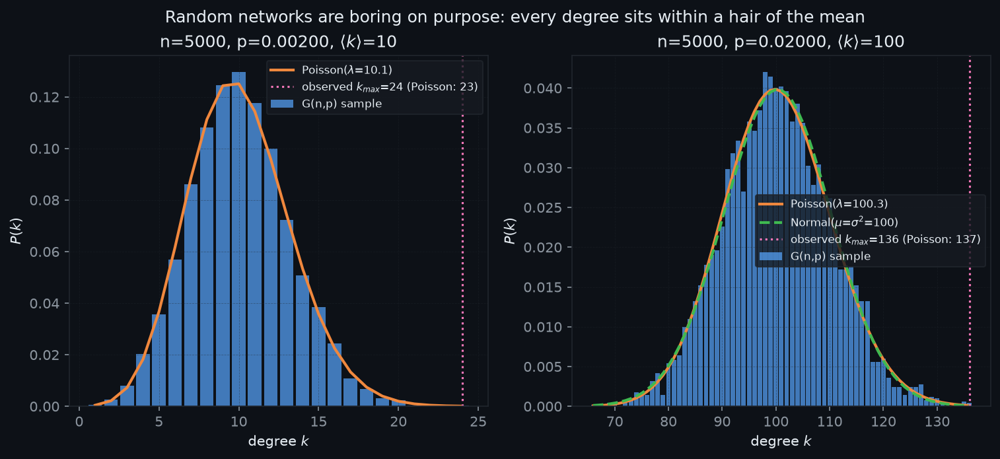
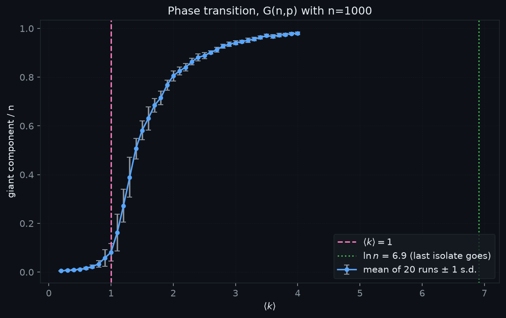
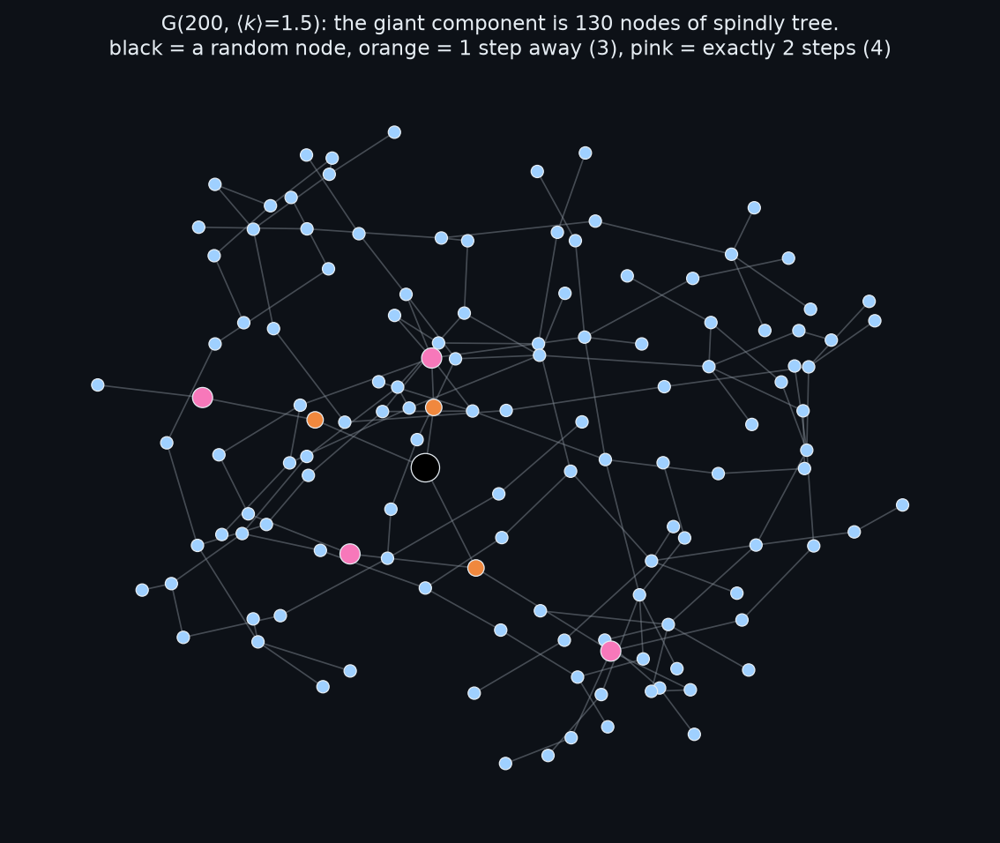
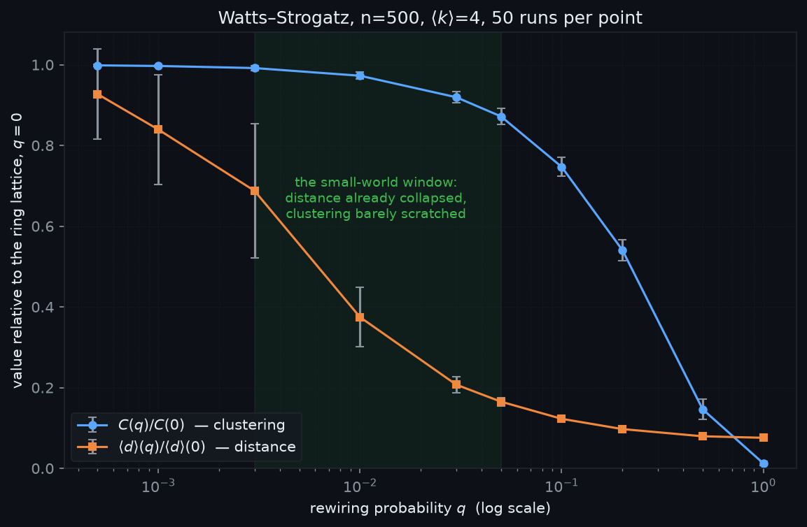
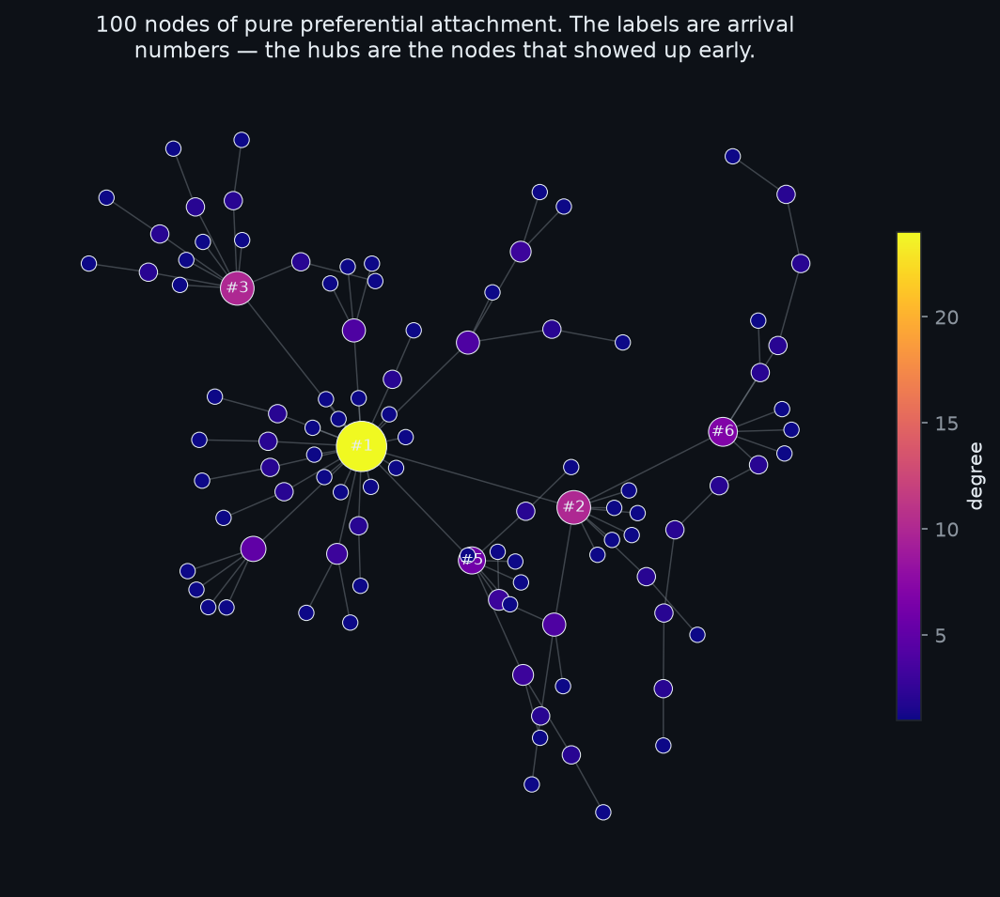
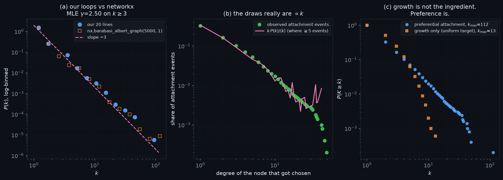
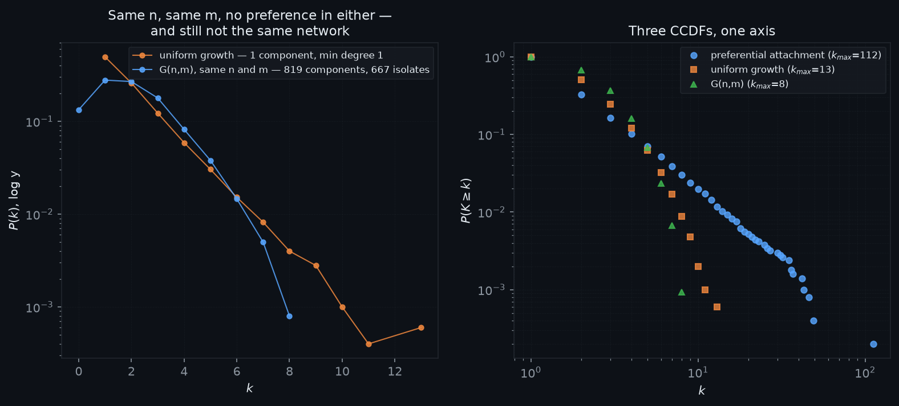
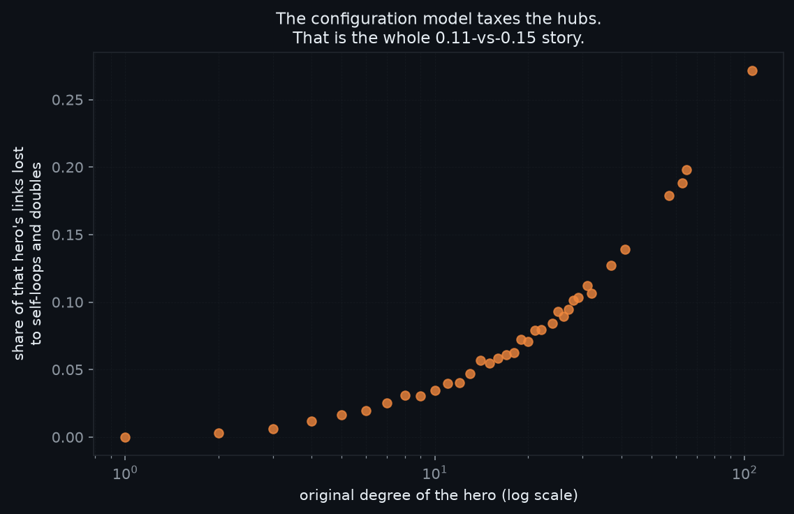
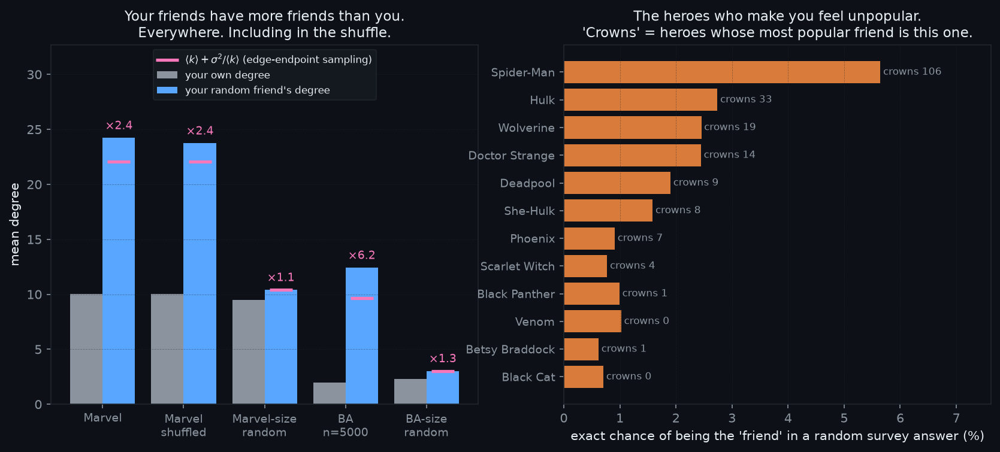

Our full working for week 2. The pen-and-paper items are worked out longhand because they are
the ones most likely to turn up on the test; the code items point at the two scripts in
analysis/ and quote the numbers they printed.
- 2.1 — Did you really read it?
- 2.2 — The random network, as code
- 2.3 — The clustering coefficient, by hand
- 2.4 — Small worlds, quantitatively
- 2.5a — Preferential attachment on paper
- 2.5b — Build preferential attachment
- 2.6 — Is it a power law?
- 2.7 — Models by hand
- 2.8 — Compared to what, properly
- 2.9 — The friendship paradox
- 2.10 — Ship an explorable
2.1 — Did you really read it? 🧠 Learn
1. Why study random networks with no data — and why keep them now?
Two reasons at the time. First, tractability: G(n,p) is the only network model where you can prove things by hand. The degree distribution, the component-size distribution, the phase transition, the connectivity threshold and the average distance all have closed forms, so it was possible to have a theory of networks before there was a single measured network. Second, the honest default: if you know nothing except how many nodes and links there are, "every pair equally likely" is the assumption that adds no invented structure. Erdős and Rényi were doing combinatorics; Rapoport and Solomonoff were modelling contagion and had no way to observe who actually knew whom.
We keep it because it turned from a model into a ruler. Nobody claims real networks are random; the point is that a random network with the same n and m tells you what a measurement looks like when nothing interesting is happening. Every "compared to what" in this week's work is a random or degree-preserving baseline. It is also where the vocabulary came from — giant component, ⟨k⟩, phase transition.
2. Why the giant component appears at exactly ⟨k⟩ = 1
Explore the network by breadth-first search. You arrive at a node along an edge; that edge is used up, so the number of new nodes it leads to is its degree minus one. In a sparse Poisson network the expected excess degree is again ⟨k⟩. So the exploration is a branching process with branching factor ⟨k⟩, and the whole question is whether one node in the frontier produces, on average, more or fewer than one node in the next frontier.
Fewer than one and each generation is smaller than the last: the search dies out after a finite number of steps, and the component is small no matter how big the network is (O(ln n)). More than one and each generation is bigger than the last: with positive probability the search never terminates, which in a finite network means it consumes a constant fraction of it. One is the exact tipping point — the same "one" as in a nuclear chain reaction or an epidemic's R₀.
Below the transition: a scattering of small trees, largest component of order ln n. At the transition: the largest component is of order n2/3. Above: one giant component plus small leftovers. The last isolated node vanishes much later, at the connectivity threshold ⟨k⟩ = ln n — for n = 1,000 that is 6.9, seven times further along than the giant component's birth.
Our simulation in 2.2.2 agrees: at ⟨k⟩ = 1 the giant component is 8.1% of the network, and it only passes half the network at ⟨k⟩ ≈ 1.4.
3. Sketching the two distributions
| Random, ⟨k⟩ = 10 | Heavy-tailed | |
|---|---|---|
| Linear axes | A clear bell centred on 10, dying to nothing by about 25. There is a most-common degree. | A spike jammed against the y-axis, then a line that looks flat at zero — with a few points far to the right that you cannot see at all. |
| Log–log axes | Bends sharply downward; the drop is faster than any straight line, and the curve simply stops. | A straight line over one or more decades. |
The three features that tell them apart at a glance: (i) is there a hump — a characteristic scale — on the linear plot? (ii) is there a straight stretch over decades on log–log? (iii) how far is kmax from ⟨k⟩, measured in units of ⟨k⟩? Random: about 2.4× (we measured kmax = 24 at ⟨k⟩ = 10). Marvel: 18× the mean in-degree.
4. 0.02 expected isolates versus 17 real ones
The 17 is far more informative. ⟨k⟩ is a number we matched — we built the random comparison to have exactly Marvel's n and m, so of course the densities agree; it carries no information about Marvel beyond what we put in.
The 17 isolates carry information the ⟨k⟩ cannot. A Poisson network with ⟨k⟩ = 9.47 puts probability e−9.47 ≈ 7.7 × 10−5 on a node being isolated, so 303 × that = 0.023 expected isolates. Observing 17 is not "unlikely", it is categorically outside the model — proof that the degree distribution has a lump of mass at zero that no Poisson with this mean can produce.
Substantively it says the roster and the graph are different objects. Being in Wikipedia's Category:Marvel Comics superheroes does not mean any hero article mentions you or that yours mentions anyone. 5.6% of the roster is administrative membership with no narrative connection at all — a data-generation fact that the density hides completely.
5. Two G(n,p) calculations
n = 6, p = 0.2.
- Expected links: C(6,2) · p = 15 × 0.2 = 3.
- Expected degree: (n − 1)p = 5 × 0.2 = 1.0. (Right at the phase transition.)
- P(a given node is isolated) = (1 − p)n−1 = 0.85 = 0.328. So about 2 of the 6 nodes are isolated on average — a network at ⟨k⟩ = 1 is mostly holes.
n = 300, p = 0.03. Expected links = C(300,2) × 0.03 = 44,850 × 0.03 = 1,345.5.
Marvel, collapsed to undirected, has n = 303 and m = 1,434, so its actual density is p = 1,434 / C(303,2) = 1,434 / 45,753 = 0.0313. The back-of-envelope p = 0.03 lands within 7% of the real link count. Marvel is, to a first approximation, a 3% dense network — the interesting part is entirely in how those 3% are arranged.
2.2 — The random network, as code 🚀 Builder
All of this is analysis/week2_models.py.
1. G(n,p) against Poisson, and then against a normal
n = 5,000 and ⟨k⟩ = 10 means p = ⟨k⟩/(n−1) = 10/4999 = 0.00200. The sample came out with mean degree 10.06 and variance 9.86 — Poisson's signature is variance = mean, and it holds.

Maximum degree check. With n draws, the largest should sit near the (1 − 1/n) quantile of the Poisson. At ⟨k⟩ = 10 that predicts 23; we observed 24. At ⟨k⟩ = 100 it predicts 137; we observed 136. The random network's hub is 2.4× the mean and 1.4× the mean respectively — the "hub" of a random network is barely distinguishable from an ordinary node, and it gets less distinguishable as the network gets denser.
Does the normal fit at ⟨k⟩ = 100? Yes, essentially perfectly. Poisson becomes symmetric and normal-shaped once λ is large (the usual rule of thumb is λ > 20), and the measured variance was 100.67 against a mean of 100.29. The consequence for network science is the point of the exercise: as a random network gets denser, the degrees get relatively more uniform, and the distance between "most connected" and "typical" shrinks. Real networks do the opposite.
2. The phase transition

The curve looks like the explorable's. Three things worth reading off it:
- At ⟨k⟩ = 1 the giant component is only 8.1% of the network. The transition is the point where a giant component starts to be possible, not where it is already large.
- The error bars are widest right at the transition (s.d. = 0.036 at ⟨k⟩ = 1, versus almost nothing at ⟨k⟩ = 4). Critical points are where outcomes stop being predictable — the same run-to-run variance you get from a fair chain reaction.
- Half the network is only in the giant component at ⟨k⟩ ≈ 1.4, and 98% of it at ⟨k⟩ = 4 — but the network is still not connected at ⟨k⟩ = 4, because that needs ln 1000 = 6.9.
3. What a "path" is in a barely-connected network

Seven nodes out of 130 are within two steps. Compare that with Marvel, where two steps from Spider-Man reaches most of the network. Near the transition the giant component is essentially a tree — it has zero triangles in this instance — and a path is a long thin thread with almost no branching and no alternatives. The diameter is 23 and the mean distance 8.2, on 130 nodes.
So "connected" near the transition does not mean "close". The giant component exists as a single fragile filament: cut any one of its links and it falls in two, because there are no redundant routes. That is the qualitative difference between ⟨k⟩ = 1.5 and ⟨k⟩ = 9.5, and it is invisible if you only look at the component size.
4. The table
Random networks with Marvel's exact n = 303 and m = 1,434, 100 replicates, mean ± s.d. The clustering row is exercise 2.3.5.
| Quantity | Real Marvel | Random G(n,m) | Verdict |
|---|---|---|---|
| Nodes / links | 303 / 1,434 | 303 / 1,434 | matched by construction |
| Mean degree ⟨k⟩ | 9.47 | 9.47 | matched by construction |
| Mean distance | 2.674 | 2.777 ± 0.005 | close — random gets it right |
| Diameter | 6 | 4.92 ± 0.31 | right order of magnitude |
| Giant component | 277 | 302.96 ± 0.24 | wrong |
| Isolated nodes | 17 | 0.04 ± 0.24 | wrong, catastrophically |
| Maximum degree | 106 | 19.03 ± 1.65 | wrong (≈ 53 s.d. out) |
| Average clustering C | 0.307 | 0.031 ± 0.003 | wrong (10×) |
| Transitivity | 0.182 | 0.031 ± 0.002 | wrong (6×) |
| Assortativity | −0.098 | −0.009 ± 0.027 | wrong (3.2 s.d.) |
Which rows does the random network get right? Exactly the ones that depend on nothing but n and m: the mean degree (by construction) and the distances. Two point eight hops versus two point seven — the random model nails the small-world property and misses everything else. That is worth sitting with: the single most famous fact about real social networks is the one a model with no social content reproduces for free.
Note the direction of the distance error, too. Marvel is slightly longer than random, not shorter. A random graph is close to the shortest a network with this density can be, so "no shorter than random" is the ceiling, not a failure.
2.3 — The clustering coefficient, by hand 🧠 Learn
1. Node A with neighbours {B, C, D}
k = 3, so there are C(3,2) = 3 possible links among the neighbours.
- Only B–C linked: CA = 1/3 ≈ 0.33
- Add C–D: CA = 2/3 ≈ 0.67
- Add B–D: CA = 3/3 = 1 — A's neighbourhood is now a complete graph.
2. The six-node network from 1.5
Edges {A–B, A–C, A–D, B–C, C–D, D–E, E–F}. Degrees: A 3, B 2, C 3, D 3, E 2, F 1.
| Node | k | Neighbours | Links among them | Ci |
|---|---|---|---|---|
| A | 3 | B, C, D | B–C ✓, C–D ✓, B–D ✗ | 2/3 = 0.667 |
| B | 2 | A, C | A–C ✓ | 1/1 = 1.000 |
| C | 3 | A, B, D | A–B ✓, A–D ✓, B–D ✗ | 2/3 = 0.667 |
| D | 3 | A, C, E | A–C ✓, A–E ✗, C–E ✗ | 1/3 = 0.333 |
| E | 2 | D, F | D–F ✗ | 0/1 = 0.000 |
| F | 1 | E | no pairs exist | 0 (by convention) |
Average C = (0.667 + 1 + 0.667 + 0.333 + 0 + 0) / 6 = 2.667 / 6 = 0.444.
The two zeros are not the same zero. E's is a measurement: E has two neighbours, they could have been linked, and they are not — E is a genuine bridge between the triangle-rich {A,B,C,D} cluster and the dangling F. F's is a convention: with k = 1 there are no pairs at all, so the fraction is 0/0 and we write 0 only because we have to write something. Averaging them together is the standard definition and it is also the reason average clustering drifts downward in networks full of degree-1 nodes — Marvel has plenty.
3. Degree 12 with Ci = 0.5
Pairs of neighbours = 12 × 11 / 2 = 66. Links among them = 0.5 × 66 = 33.
(a) A hub's neighbours are drawn from many separate contexts that have no reason to know each other, while the denominator grows as k², so the number of triangles a person can realistically maintain cannot keep up with the number they would need. (b) With k = 1 there are no pairs of neighbours, so the denominator is zero and any value assigned is a convention rather than a measurement of anything.
4. Why Marvel's C = 0.31 but transitivity = 0.18
Transitivity is the one pulled down by the hubs. Transitivity is a ratio of totals — 3 × triangles divided by the number of connected triples — so each node contributes to the denominator in proportion to k(k−1)/2, roughly k². Spider-Man alone supplies 106 × 105 / 2 = 5,565 triples, about 4% of the network's total, and hubs have low local clustering. Average C weights every hero equally, so the many small, tightly-knit heroes (teams, families, era-mates) dominate instead.
If every node had the same degree, every denominator k(k−1)/2 would be identical. Transitivity would become Σei / (N · pairs) and average C would become (1/N) Σ ei/pairs — the same number. The gap between the two statistics is entirely a measure of degree heterogeneity, which makes the pair of them a poor-man's heterogeneity test: C ≫ transitivity means hubs.
5. The clustering row
Added to the 2.2.4 table above: real 0.307, random 0.031 ± 0.003. For a random network C ≈ ⟨k⟩/(n−1) = 9.47/302 = 0.0313 — the simulation reproduces the formula to three decimals.
The random network gets the density and the distances right and everything else wrong. It is a fine ruler for "how short can paths be" and a useless one for "is this network clustered", which is exactly the setup for exercise 2.8.
2.4 — Small worlds, quantitatively 🧠 Learn + 🚀 Builder
1. The prediction, written down before running anything
Clustering: q = 0 > q = 0.01 > q = 1. Mean shortest path: q = 0 > q = 0.01 > q = 1. Both orderings are the same, because rewiring only ever destroys local structure and only ever creates long-range links.
The ranking was right. The magnitudes were the surprise:
| q | C | as % of C(0) | ⟨d⟩ | as % of ⟨d⟩(0) |
|---|---|---|---|---|
| 0 | 0.5000 | 100% | 62.88 | 100% |
| 0.01 | 0.4863 | 97% | 23.55 | 37% |
| 0.1 | 0.3735 | 75% | 7.72 | 12% |
| 1 | 0.0062 | 1% | 4.76 | 8% |
2. The classic figure

3. Where does it become small, and why does C hold on?
The network becomes small somewhere around q ≈ 0.01. At that point mean distance is down to 37% of the lattice value while clustering is still at 97%, and by q ≈ 0.05 distance is at 16% with clustering still at 87%. Five rewired links out of a thousand is enough to halve the distances.
Without the word. Rewiring one link removes it from one small neighbourhood, so the number of triangles destroyed is proportional to the number of links you rewired — clustering falls roughly linearly in q, and at q = 0.01 you have only touched 1% of the links. But that same one link is now a route that every node on one side of it can use to reach every node on the other, so a single rewiring shortens the path for an enormous number of node pairs at once — the effect on distance is superlinear in q at small q. Clustering is a local ledger that you debit one entry at a time; distance is a global ledger where one entry pays out thousands of times.
With the word. A shortcut has a local cost and a global benefit.
4. What is the network at q = 1?
At q = 1 every link has been rewired, so the wiring carries no memory of the ring and the network is random-like: clustering has collapsed to 0.0062, and ⟨k⟩/(n−1) = 4/499 = 0.0080, the same ballpark.
But it is not exactly a random network. Two differences, both structural. First, the number of links is exactly n·k/2 = 1,000 every single time, whereas G(n,p) has a random link count. Second — the hint — the minimum degree is k/2 = 2, not zero. In the Watts–Strogatz construction the rewiring step takes an edge (u, v) and replaces it with (u, w): the source end never moves. Every node is the source of its own k/2 clockwise edges, so it keeps them however aggressively the network is rewired. We measured min degree 2 at q = 1, against min degree 0 for a G(n,m) with the same n and m. A Watts–Strogatz network can never have an isolated node; a random network can, and Marvel has seventeen.
2.5a — Preferential attachment on paper 🧠 Learn
1. The endpoint-list trick
Edges A–B, B–C, B–D, C–D. Writing both endpoints of every edge:
A B B C B D C D → [A, B, B, C, B, D, C, D]Eight entries, because 4 edges × 2 endpoints = 2m. A appears once, B three times, C twice, D twice — which is just each node's degree, and 1 + 3 + 2 + 2 = 8 = 2m as it must.
- P(newcomer links to B) = 3/8 = 0.375
- P(newcomer links to A) = 1/8 = 0.125
Why this is Π(ki) = ki/Σjkj: node i appears in the list exactly ki times and the list has Σkj entries, so drawing one entry uniformly hands you node i with probability ki/Σkj — the rule, with no arithmetic required. (This is also why the classic bug is to sample from the node list instead: that gives 1/N and kills the model.)
2. One step of rich-get-richer
E links to B. New edge list adds B–E, so the endpoint list becomes 10 entries with B appearing 4 times:
- P(B catches the next newcomer) = 4/10 = 0.400, up from 0.375.
- If E had linked to A instead: A appears twice out of 10 → 0.200, up from 0.125.
Two sentences on the loop. Every link you receive adds one entry to your row of the list and two to the total, so winning increases your share while every node that did not win sees its share fall from k/2m to k/(2m+2) — the gap widens on every single round, whoever wins. Because the advantage is multiplicative rather than additive, a node that happens to get two or three extra links early is not slightly ahead but permanently ahead, and after thousands of rounds those early accidents are the only thing separating the hubs from everyone else.
Worth noticing: A's relative gain (×1.6) is far bigger than B's (×1.07). The mechanism does not make the rich richer faster in proportional terms — it makes them richer in absolute terms, every round, forever, and that is enough.
3. Kill the preference
Uniform rule: Π(ki) = 1/N, with no k in it anywhere. Degree does not enter, so a node with 200 links and a node with 1 link are equally attractive.
Predictions, made before running the code:
- Preferential attachment has by far the larger maximum degree — the difference should be an order of magnitude, not a few percent.
- Preferential attachment on log–log: a straight line, heavy tail.
- Uniform growth on log–log: not a straight line. It should be exponential, P(k) ~ e−k/⟨k⟩, because the only thing that varies between nodes is how long they have been around, and arrival times are uniform — which turns into an exponential, straight on log-linear axes and curving on log–log.
4. Growth alone versus G(n,m)
Neither has preference, and they still differ in two big ways.
Age. In the growth model the first node has had 5,000 rounds to be picked and the last has had none, so degree is a proxy for arrival time and the distribution has an exponential tail. G(n,m) has no arrival times at all — every node is exchangeable, and the distribution is Poisson, which is narrower.
Components. Growth builds a tree: every new node arrives already attached, so there is exactly one component, no isolates and minimum degree 1 — no matter how sparse. G(n,m) at the same density (m ≈ n, so ⟨k⟩ ≈ 2) is only just past the phase transition and shatters into hundreds of pieces with many isolates. Same n, same m, no preference in either, and one is a single connected object while the other is rubble.
2.5b — Build preferential attachment 🔬 Tool
The whole model, written out — it really is about twenty lines:
g = nx.Graph()
g.add_edge(0, 1)
endpoints = [0, 1] # every edge contributes both of its nodes
for new in range(2, n_target):
target = rng.choice(endpoints) # uniform here == proportional to degree
g.add_edge(new, target)
endpoints.extend([new, target])1. One hundred nodes, drawn

The five biggest hubs are five of the first seven nodes to arrive. First-mover advantage is not a subtle statistical tendency in this model; it is essentially the whole outcome.
2. Five thousand nodes
Maximum degree 112, minimum degree 1, mean degree 2.0 (it is a tree: m = n − 1).
3. Validation — both checks

nx.barabasi_albert_graph(5000, 1), with a
slope −3 reference. (b) the attachment events themselves: what share of draws landed on a
degree-k node, against the prediction k·P(k)/⟨k⟩. (c) preferential attachment against
growth-with-uniform-targets, as CCDFs.
(a) The slope. The log-binned distribution lies on the −3 reference line across three decades. The maximum-likelihood estimate on k ≥ 3 is γ = 2.50, which climbs to 3.02 by kmin = 20 — see 2.6 for why that is expected rather than alarming.
(b) An extra check we added. Slope-matching only tells you the outcome looks right. We also logged the degree of every node at the moment it was chosen, over all 4,998 attachment events, and compared the observed distribution of chosen-degrees against k·P(k)/⟨k⟩ — the share of the endpoint list held by degree-k nodes. They agree over the whole range. This is the check that would catch the classic bug directly: sampling from the node list instead of the endpoint list would put the green points on a flat line, and no amount of squinting at a log–log slope would tell you which of the two mistakes you had made.
(c) Against networkx. Our kmax = 112,
nx.barabasi_albert_graph(5000, 1) gives 141. Both are single draws from a
distribution whose tail is genuinely broad, and the binned distributions overlap everywhere
except the last two points, which are one or two nodes each. Agreement up to tail sampling
noise, as expected.
4. Growth or preference — which makes the hubs?
Preference, decisively. Same growth process, same number of nodes, same number of links, one line of code different, and the maximum degree goes from 112 to 13. On log–log the preferential CCDF is a straight line and the uniform one bends over sharply.
This confirms the 2.5a prediction, and it is worth being precise about what it does not show: growth is not irrelevant, it is just not sufficient. Preferential attachment needs both — you need degrees to differ before "proportional to degree" can amplify anything, and growth is what supplies the initial differences (via arrival order) for the preference to act on. Take growth away instead, and the model has nothing to amplify.
5. Uniform growth against G(n,m)

| kmax | kmin | Components | Isolates | |
|---|---|---|---|---|
| Preferential attachment | 112 | 1 | 1 | 0 |
| Uniform growth | 13 | 1 | 1 | 0 |
| G(n,m), same n and m | 8 | 0 | 819 | 667 |
2.5a got it right on both counts. Uniform growth has a longer tail than G(n,m) (13 versus 8) because of the age effect, and it is a single connected tree while G(n,m) at ⟨k⟩ ≈ 2 shatters into 819 pieces, 667 of them single nodes. The mere act of arriving-and-attaching is a strong structural constraint even when the attachment itself is completely blind.
2.6 — Is it a power law? 🧠 Learn + 🔬 Tool
1. The CCDF of the Marvel in-degree

The CCDF is far easier to read in the tail, and the reason is structural. P(k) in the tail is built from bins holding one or two heroes each, so the points scatter by an order of magnitude and the choice of bin width visibly changes the answer. The CCDF at k is just "how many heroes have at least k links, divided by the total" — every one of the 245 heroes contributes to every point to the left of it, so the curve is monotone by construction and the tail is supported by counts rather than by bin occupancy. There is nothing to bin, so there is no bin width to choose and no way to accidentally tune the answer.
Reading the slope by eye across the whole range gives −1.31, and since the CCDF exponent is γ − 1, that converts to γ ≈ 2.31. Hold on to that number; the honest fit disagrees with it.
2. Marvel against BA and against random
The three networks have wildly different densities, so we divided every degree by its own network's mean before overlaying — otherwise the comparison is about density, not shape.
Marvel resembles BA, unmistakably, and does not resemble the random network at all: the random CCDF falls off a cliff at about 2× its mean, while Marvel and BA both keep going for another decade. The two track each other closely from about 1× to 4× the mean. Above roughly 4× the mean — k ≈ 25 — Marvel separates, and it separates upward: its tail is consistently heavier than the BA reference, which is the same thing the fit says (γ = 2.62 against BA's 3). Then it ends in one point far out on its own at 18× the mean — Spider-Man.
And 303 nodes is the whole problem. Only 46 heroes have in-degree ≥ 11, and only three reach 60 or more. The "tail" that all the theory is about is a few dozen data points, so the last decade of the CCDF is built from single heroes; one editorial decision on one Wikipedia page moves it. A tail that thin cannot distinguish between functional forms, which is the subject of item 4.
3. Asking a chatbot 🔬 Tool
This item asks for a live transcript from a fresh chat, graded against the reading. We are not reproducing a transcript here, because a conversation we cannot re-run is not evidence, and it would be very easy to write a strawman. What we can put on the record is the rubric we graded against — and it is a useful checklist regardless of who is answering:
- Does it distinguish heavy-tailed from power law? Log-normal, stretched exponential and a power law with a cutoff are all heavy-tailed and none of them is a power law. Conflating the two is the single most common error.
- Does it ask for a kmin, or does it fit the whole range? A fit that starts at k = 1 is not a power-law fit.
- Does it use maximum likelihood, or does it regress on log-binned P(k)? Least squares on a log-log plot is biased and everyone knows it and everyone still does it.
- Does it demand an alternative hypothesis — a likelihood ratio against log-normal — rather than only a goodness-of-fit to the power law?
- Does it mention n? With 46 tail points the right answer is "you cannot tell", and any answer that does not say so is overclaiming no matter how much machinery it uses.
- Does it eyeball a straight line and call it a day?
Answers that pass 1–5 exist. What we would watch for is the second question, "how would you test that properly?", producing a much better answer than the first — which is diagnostic on its own: a model that knows the right method but does not use it unless asked is exactly the failure mode the exercise is training us to catch.
4. What we can and cannot claim
The Marvel in-degree distribution is heavy-tailed, and that claim is safe: the maximum in-degree is 18× the mean, and in the undirected collapse 100 random networks with Marvel's exact n and m topped out at 19.0 ± 1.7 against Marvel's 106 — 53 standard deviations away — while the CCDF shows no characteristic scale anywhere in its range. What we cannot claim is that it is a power law. A properly conducted Clauset-style fit — scan kmin, maximum-likelihood γ at each, keep the minimum-KS choice — gives kmin = 11, γ = 2.62 and KS = 0.086 on a tail of 46 heroes; a truncated log-normal fitted to the same 46 points cannot be distinguished from it by a likelihood-ratio test (normalised R = −0.78, p = 0.43), and if anything the log-normal is marginally ahead. To make the stronger claim we would need either a much larger tail — the whole of Wikipedia's comics coverage rather than one category, which is the crawl-your-own option the course offers for weeks 2–4 — or a synthetic-resampling goodness-of-fit p-value, and neither would rescue a 46-point tail. The robust version of the finding is the one that does not depend on the functional form: Marvel has hubs that no random network of this size and density could produce.
2.7 — Models by hand 🧠 Learn
1. Attachment probabilities
Degrees A 5, B 3, C 1, D 1, so Σk = 10 and there are m = 5 links.
- P(newcomer → A) = 5/10 = 0.50
- P(newcomer → D) = 1/10 = 0.10
With m = 2 links to two different nodes, first preferentially and then again among the rest. P(A gets one of the two) = P(A is first) + P(someone else is first) × P(A is second):
P(A first) = 5/10 = 0.5000
P(B first, then A) = 3/10 × 5/(10-3) = 0.3 × 5/7 = 0.2143
P(C first, then A) = 1/10 × 5/(10-1) = 0.1 × 5/9 = 0.0556
P(D first, then A) = 1/10 × 5/(10-1) = 0.1 × 5/9 = 0.0556
-------
0.8254About 83% — with only four nodes to choose from and A holding half the endpoint list, a newcomer that makes two links is very hard to keep away from A.
2. Has A's chance gone up or down?
This is the item where the obvious answer is wrong. After the newcomer E attaches to A, the degrees are A 6, B 3, C 1, D 1, E 1, and Σk = 12. So
P(A) goes from 5/10 = 0.500 to 6/12 = 0.500.
Exactly unchanged. Winning a link adds 1 to your numerator and 2 to the denominator, so k/2m becomes (k+1)/(2m+2), and that is an increase only when k < m. Here k = m = 5, so it is a wash. A hub with k > m actually sees its per-round probability dip slightly after each win.
So what does "rich get richer" mean? Look at what happened to everyone else: B went from 3/10 = 0.300 to 3/12 = 0.250, and C and D from 0.100 to 0.083. Every node that did not win lost share. The winner holds station while the field falls back, every round, forever — and it is the winner's expected degree, not its per-round probability, that compounds. The rich get richer in the ledger, not in the odds.
3. Name the model from the description
| Description | Model | What gives it away on a plot |
|---|---|---|
| (a) every node has degree exactly 4 | Lattice (regular ring) | A single spike at k = 4 and literally nothing else — a delta function. Zero variance. |
| (b) hump around 8, nothing above 20, bell shape on linear axes | Random (Erdős–Rényi, ⟨k⟩ ≈ 8) | A characteristic scale: a peak at the mean and a cutoff far faster than exponential, so log–log curves sharply down. Watch out — Watts–Strogatz also gives a narrow hump, but a narrower one than Poisson with the same mean, and with a hard floor at k/2. If the bell matches Poisson's width, it is ER. |
| (c) most nodes at 2 or 3, a few at 200 | Barabási–Albert | No characteristic scale; a straight line over decades on log–log; kmax two orders of magnitude above the mode. |
4. Turning the knobs
Double ⟨k⟩, keep n (random network):
- C = ⟨k⟩/(n−1) → doubles. Clustering in a random network is just density.
- ⟨d⟩ ≈ ln n / ln ⟨k⟩ → shrinks, but only through a logarithm, so doubling ⟨k⟩ from 10 to 20 cuts distance by about 23%, not by half.
- Giant component → grows toward n; S solves S = 1 − e−⟨k⟩S, which is already 0.98 at ⟨k⟩ = 4.
Double n, keep ⟨k⟩:
- C = ⟨k⟩/(n−1) → halves. This is why clustering is such a damning statistic for random networks: real networks do not get less clustered as they grow, and G(n,p) must.
- ⟨d⟩ → grows, by ln 2 / ln ⟨k⟩. At ⟨k⟩ = 10 that is +0.30 hops for a doubling — the small world is very robust to size.
- Giant component: the fraction S is unchanged (it depends only on ⟨k⟩); the absolute size doubles.
Watts–Strogatz, q from 0.001 to 0.01. From our sweep: C goes 0.4984 → 0.4863 (down 2%), ⟨d⟩ goes 52.8 → 23.6 (down 55%). Distance moves first, and it is not close. That decade of q is essentially the whole small-world transition.
5. The 3 × 3 table
| Clustering | Distances | Hubs | |
|---|---|---|---|
| Random | Wrong — C = ⟨k⟩/(n−1) → 0 as networks grow. No ingredient closes a triangle. | Right — ln n / ln ⟨k⟩ falls out of pure randomness. Marvel 2.67, random 2.78. | Wrong — Poisson has a hard cutoff. Marvel's kmax = 106, random gives 19 ± 2. |
| Watts–Strogatz | Right — the ring lattice is the ingredient; it supplies triangles that survive small q. | Right — the rewired links are the ingredient; a 1% rewiring already collapses distance. | Wrong — degrees are nearly homogeneous with a floor at k/2. No mechanism produces heterogeneity. |
| Barabási–Albert | Wrong — 0.08 against Marvel's 0.31 at matched n and m. Nothing in the rule closes a triangle. | Right, and then some — hubs make it ultra-small. We measured 2.63 against 2.67. | Right — preferential attachment is the ingredient, and it is the only one of the three that has it. |
The table has a clean reading: each model contains exactly the ingredient it was built to contain and nothing else, and no model gets all three because no single mechanism produces all three. Triangles need triadic closure or a spatial structure; short distances need randomness; hubs need preference. Real networks have all three because real networks are generated by more than one process at once.
2.8 — Compared to what, properly 🧠 Learn + 🚀 Builder
Items 4–7 are the backbone of the week-2 post; the figures and the full discussion are there. Here is the working.
1. "Distance 2.7 versus random 2.8, so it is not a small world"
The flaw: a random network is not a baseline for "small world", it is the floor. Randomness is the most efficient possible way to make paths short at a given density, so matching it is the best any network can do — the claim reads a ceiling as a failure. It also drops half the definition: small-world means short paths together with high clustering, and the sentence never mentions clustering.
The null that fixes it: a ring lattice (Watts–Strogatz at q = 0) with the same n and ⟨k⟩ — the structured extreme rather than the random one. In our own sweep, a 500-node lattice at ⟨k⟩ = 4 has ⟨d⟩ = 62.9. Marvel is at 2.67 with C = 0.31; the honest statement is that it sits at random-network distances while holding ten times random-network clustering, which is precisely what "small world" means.
2. "39% reciprocated versus 3% at random, so 13× chance"
The flaw: a random directed network has no hubs, and hubs manufacture reciprocity for free. If a page has 106 incoming links, the chance that at least some of them are answered is high for reasons that have nothing to do with editorial norms. The null differs from Marvel in two ways at once (density and degree structure), so the ratio cannot be attributed to either.
The better null: shuffle the directed edges while preserving every node's
in- and out-degree (nx.directed_edge_swap). We ran 100 replicates:
| Baseline | Reciprocity | Marvel ÷ baseline |
|---|---|---|
| Real Marvel | 0.392 | — |
| Random directed G(n,m) | 0.0191 ± 0.0047 | 20.6× |
| In/out-degree-preserving shuffle | 0.0653 ± 0.0070 | 6.0× |
Does the effect survive? Yes, and comfortably — z = +47 against the honest null. But the hubs account for a real share of it: they lift the baseline from 1.9% to 6.5%, more than tripling it. The headline number should be 6×, not 13× or 20×, and the residual is the interesting part: Wikipedia editors add mutual links, and no arrangement of the existing degree sequence reproduces that.
3. "C is ten times ER, which proves the heavy tail causes it"
The flaw: the conclusion does not follow from the comparison, because ER differs from Marvel in two ways simultaneously — it has the wrong degree distribution and random wiring. A comparison that changes two things cannot attribute the result to one of them. To claim the degree distribution is the cause you have to hold it fixed and randomise everything else.
What happens when you do: under degree-preserving edge swaps, clustering on the giant component falls from 0.320 only to 0.155 — not to 0.037. So the degree sequence accounts for about 40% of the gap to the ER baseline and the remaining 60% is something else. The claim is not just unproven, it is roughly the wrong way round.
4. Configuration model versus G(n,m)
100 replicates each, on the 277-node giant component, real C = 0.3199.
| Null | Mean C | s.d. | z | Empirical p |
|---|---|---|---|---|
| G(n,m) | 0.0369 | 0.0035 | +81.6 | < 0.01 |
| Configuration model | 0.1093 | 0.0082 | +25.8 | < 0.01 |
| Degree-preserving swaps | 0.1547 | 0.0096 | +17.3 | < 0.01 |
Links lost to the cleanup: simplifying the configuration model (dropping self-loops and collapsing parallel links) costs on average 103.5 links, 7.3% of the 1,421. The real value is off every chart in every case — the highest C reached by any of the 300 null networks was 0.178, against Marvel's 0.320.
5. The other road, and why the two disagree
Degree-preserving edge swaps, nswap = 10 × m = 14,210 per replicate. The degree
sequence was verified identical after every run — that is not optional, it is the only thing
that makes it the right null.
The configuration model lands at 0.109 and the swaps at 0.155, matching the numbers on the course page. Where the difference comes from:

The lost links are not lost uniformly. A node with k stubs has of order k² chances to collide with itself or to double up with a partner, so the deletion rate rises with degree: Spider-Man loses 27.2% of his links, Hulk 19.8%, Wolverine 18.8%, Doctor Strange 17.9% — while heroes of degree 1 lose 0.0% and degree 2 lose 0.3%.
So the configuration model is not testing the degree sequence we handed it. It quietly hands back a flattened one with the hubs shaved down, and flatter degree sequences produce fewer triangles, which is why its clustering baseline sits 42% below the swaps'. The edge-swap number is the one to quote. If you use the configuration model on a heavy-tailed network without reporting how many links you deleted and whose they were, your null is biased in the direction that flatters your result.
6. Transitivity and the isolated nodes
| Quantity | Real | vs G(n,m) | vs degree-preserving shuffle |
|---|---|---|---|
| Transitivity | 0.182 | z = +62.3 | z = +16.2 |
| Isolated nodes | 17 | z = +69.8 | z = 0 (frozen) |
Transitivity is extreme under both. It survives the degree-preserving null at z = +16, so it is not a hub artefact — Marvel really does close triangles. What the degree sequence buys you is the drop from z = +62 to z = +16: in value terms the shuffle baseline is 0.115 against G(n,m)'s 0.031 and Marvel's 0.182, so the degree sequence accounts for a bit over half of the raw gap and genuine triadic closure for the rest. The meaning is straightforward: heroes come in teams and eras, and Wikipedia articles about team-mates reference each other.
Isolated nodes is the more interesting answer, because it is unremarkable under the shuffle in a way that means nothing at all. The count of degree-zero nodes is a function of the degree sequence alone, so a null that preserves the degree sequence preserves it exactly: 17 in every one of the 100 shuffles, s.d. zero, z = 0 by construction. That is not evidence that the isolates are ordinary — it is evidence that we asked a question the null cannot answer. Under G(n,m) the same count is z = +70 and wildly extreme.
The lesson generalises: before reporting a z-score, check whether your null can move the quantity at all. A null result from a statistic your null holds fixed is not a null result. It is a category error, and it will silently pass every significance check you put in front of it.
7. The paragraph the AI should have written
The Marvel giant component has an average clustering coefficient of 0.320, against 0.155 ± 0.010 in 100 degree-preserving edge-swap randomisations of the same network — a null that holds every hero's number of links exactly fixed and randomises only who links to whom — giving z = +17.3 and an empirical p < 0.01, the largest of the 100 shuffled values being 0.178. The excess is therefore not an artefact of the heavy-tailed degree distribution: comparing instead against a naive Erdős–Rényi baseline of 0.037 would have inflated the z-score roughly fivefold (81.6 against 17.3), because the degree sequence alone already accounts for about 40% of that gap. Marvel's heroes are genuinely organised into overlapping teams and eras whose articles cross-reference each other, and that organisation is what the remaining clustering measures.
2.9 — The friendship paradox 🧠 Learn + 🔬 Tool
1. Stating it precisely, and the algebra
The two averages being compared are: (i) the mean degree of a node chosen uniformly at random, and (ii) the mean degree of a neighbour. They are different because the second is not a uniform sample of nodes. A node of degree k appears in k different neighbourhoods, so it has k chances to be sampled as somebody's friend, while a node of degree 1 has one chance and an isolate has none at all. The comparison is biased by construction, and the bias is always in the same direction.
Sampling a random edge endpoint draws node i with probability ki/Σkj, so the mean degree of that draw is
E[k_neighbour] = Σ k_i · (k_i / Σ k_j) = ⟨k²⟩ / ⟨k⟩ = (⟨k⟩² + σ²) / ⟨k⟩ = ⟨k⟩ + σ²/⟨k⟩The excess is σ²/⟨k⟩ and nothing else. So the paradox is strongest in scale-free networks because a power law with γ < 3 has a divergent second moment — σ² is not just large, it grows with n, so the gap grows without bound as the network gets bigger. It is weakest in random networks because Poisson has σ² = ⟨k⟩ exactly, giving E[kneighbour] = ⟨k⟩ + 1. Weakest, but never absent: the excess is exactly one friend, and it can only vanish if σ² = 0, i.e. in a perfectly regular graph where everyone has identical degree.
2. Simulating it

| Network | Your degree | Friend's degree | Ratio | ⟨k⟩+σ²/⟨k⟩ | Friend ≥ you |
|---|---|---|---|---|---|
| Marvel (real) | 10.03 | 24.22 | 2.4× | 22.08 | 75% |
| Marvel, degree-preserving shuffle | 10.03 | 23.74 | 2.4× | 22.08 | 76% |
| Marvel-sized random G(n,m) | 9.47 | 10.40 | 1.1× | 10.39 | 63% |
| BA, n = 5,000 | 2.00 | 12.42 | 6.2× | 9.63 | 81% |
| BA-sized random G(n,m) | 2.31 | 3.02 | 1.3× | 3.02 | 75% |
The pattern is exactly what item 1 predicts: BA ×6.2, Marvel ×2.4, random ×1.1–1.3. Never absent, never as strong as in a scale-free network.
In Marvel the measured friend degree is 24.22 but the formula gives 22.08. They are different quantities. The formula is the mean degree at a random edge endpoint, which is hub-weighted. The survey — pick a random hero, then a random friend of theirs — weights every hero equally, so P(friend = w) = (1/N)Σv~w 1/kv, which is not proportional to kw. The two agree in the random network (10.40 vs 10.39) and diverge in Marvel and BA, and the reason they diverge is disassortativity: in both of those, low-degree nodes are attached to hubs at a higher rate than an edge-endpoint sample implies, so the equally-weighted survey lands higher. Every textbook statement of the paradox we could find uses the formula and the survey interchangeably; on a disassortative network they differ by 10%.
3. Null-modelling it
Run the identical measurement on a degree-preserving shuffle of Marvel and the effect is untouched — 23.74 against 24.22, 76% against 75%.
This null cannot kill it, and that is the finding. The paradox is a theorem about the degree distribution: the excess is σ²/⟨k⟩, which is computed from the degree sequence alone. Any null that preserves the degree sequence preserves σ², ⟨k⟩ and therefore the paradox, exactly. Rewiring cannot help.
This makes the paradox the mirror image of clustering, and the pair of them is a nice demonstration of what a null model is for. Clustering is destroyed by a shuffle, so it is a property of the wiring. The paradox is immune to a shuffle, so it is a property of the degree sequence. Same test, opposite answers, and the answer tells you which layer of the network the phenomenon lives on.
What lies beyond the degree sequence? Reasoning first:
- Assortativity should matter, and in which direction is predictable. If hubs preferentially link to hubs (assortative), then the typical low-degree node is attached to other low-degree nodes and the paradox weakens for most of the population. If hubs link to nobodies (disassortative), almost everyone is attached to somebody much bigger and the paradox strengthens. Marvel is disassortative at −0.098, so we predicted the survey average would exceed the edge-endpoint formula — and it does, 24.22 against 22.08. The shuffle, which is only mildly disassortative on its own (−0.120), gives 23.74, slightly lower. Prediction confirmed.
- Clustering should weaken it slightly. Triangles mean your friends are each other's friends, so your neighbourhood is more internally similar and there is less room for a friend to be drawn from a much higher stratum. We would expect a small effect, well below the degree-sequence term.
- Communities should weaken it for the same reason at a larger scale: if you only ever sample friends from your own group, your comparison class is the group rather than the network, and the biggest hubs are out of reach.
We tested the first one, which is the one the data can speak to: the gap between the equally-weighted survey and the edge-endpoint formula is +9.7% in Marvel (assortativity −0.098), +29% in the BA network (−0.080, and a far heavier tail), and +0.1% in the Marvel-sized random network (−0.009). The gap tracks disassortativity, as predicted. Assortativity is a real third ingredient, and the standard statement of the paradox does not mention it.
4. Grading an explanation
As with 2.6.3, we are not posting a chatbot transcript we cannot re-run. The rubric, which our own simulations gave us:
- Does it name the mechanism as a sampling bias — high-degree nodes appear in more neighbourhoods — rather than something mystical about popularity?
- Does it mention variance? The excess is exactly σ²/⟨k⟩. An explanation without a variance term cannot say why the paradox is stronger in some networks than others.
- Does it claim hubs are necessary? They are not. Our Marvel-sized random network has no hubs at all and still shows the paradox at ×1.1 with 63% of heroes beaten. The paradox needs σ² > 0, not a power law. This is the overclaim we would expect most often.
- Does it distinguish "your friends have more friends on average" from "most of your friends have more friends"? Those are different statements with different truth values.
- Does it say which average — random edge endpoint, or random person's random friend? Almost nothing does, and on Marvel the two differ by 10%.
2.10 — Ship an explorable 🚀 stretch
We built one: the Shuffle Machine, embedded in the week-2 post. It holds the real 277-hero giant component in the browser and runs degree-preserving double edge swaps live — 14,210 swaps per replicate — so you can watch a null distribution assemble itself and see the z-score settle down as the sample grows.
The claim it makes grabbable is the one none of this week's widgets shows: that some statistics cannot move under a degree-preserving null at all. The statistic menu deliberately mixes three kinds — quantities that die (transitivity, triangles), quantities that survive (assortativity, links among the top 20 hubs), and one that is frozen by construction (Spider-Man's share of all links, which reports a standard deviation of exactly zero and refuses to give you a z-score). Switching between them makes the difference between "not significant" and "not even possible" something you can see rather than something you have to be told.
No dependencies, no build step, ~350 lines:
docs/assets/week2/shuffle-machine.js. It also re-verifies the degree sequence
after the first shuffle and says so in the status line, because a shuffle widget that
silently broke its own invariant would be worse than no widget.